| 日付 | 2017年12月17日（日） |
|---|---|
| 山域 | 駿河 |
| メンバー | 家族（妻、長女・6歳、長男・4歳） |
| 山行形態 | 子連れ日帰り |
| アクセス | 車 |
| ルート (Map) | 車道終点 (9:02) - (10:16) 樽峠 - (11:08) 十国展望台 - (11:35) 晴海展望台 (12:12) - (12:36) 十国展望台 - (13:11) 樽峠 - (14:08) 車道終点 |
年賀状の写真を撮るため富士山が見える山を探す。
もう寒いためあまり高い山には行けない。目を付けたのは貫ヶ岳。
富士山の南西にある山で山頂からの展望は乏しいが、
道中の展望台からは富士山がきれいに見えそうだ。
車道の終点に車を停める。標高450m。
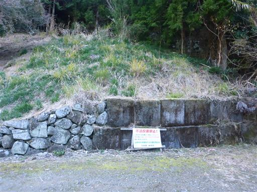
山奥だが明るく開けている。車道終点から細い道を辿って行く。
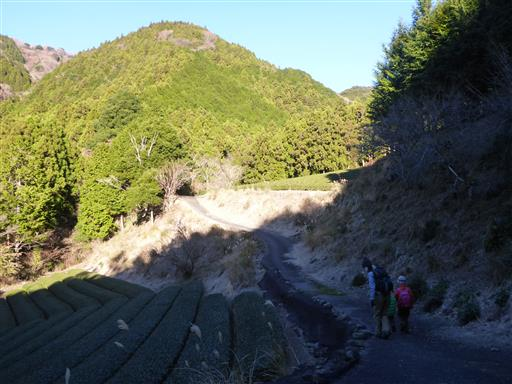
歩き始めた道は間違いで、車道を少し戻ったところに登山口がある。
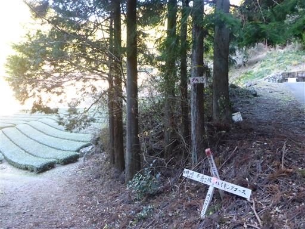
周囲はお茶畑が広がっている。
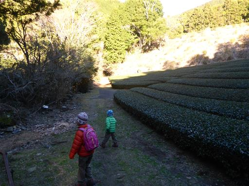
もう12月中旬だが、わずかに紅葉が残っている。
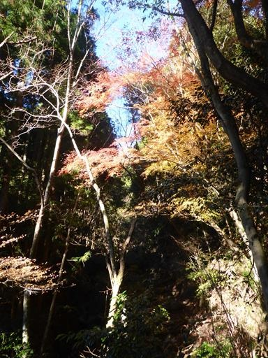
慎重に木の橋を渡る。木が腐っていてかなり揺れる橋だ。
息子はようやく手を繋がなくても一人で渡れるようになった。
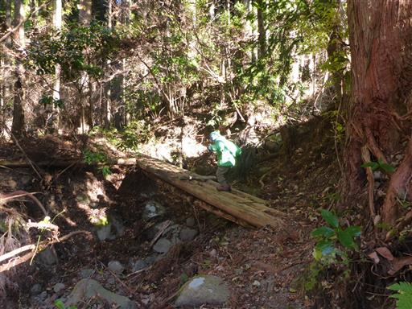
次の橋は高度感があるため、もう無理。でも一人で頑張って渡る。
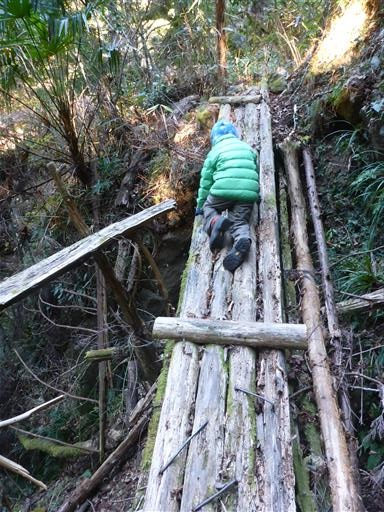
娘は慣れたもので楽勝で渡る。
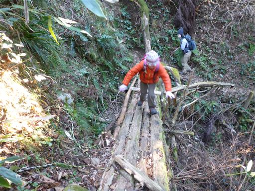
樽峠まで沢沿いの道を登って行く。
登山道は概ね整備されているが、ところどころ危険な箇所がある。
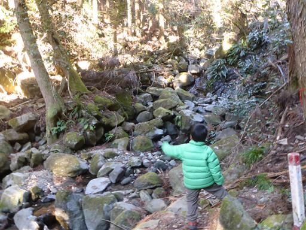
何度か巨岩が転がる沢を渡る。水はほとんど流れていない。
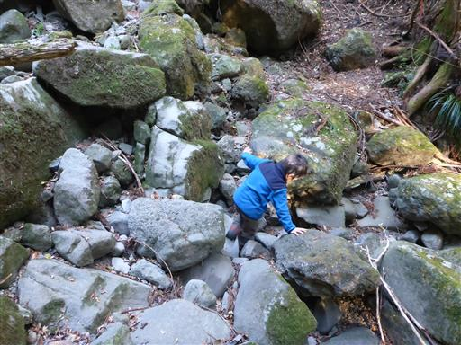
所々に石が積み上げられている。

登山道は沢を離れ、ようやく歩きやすい道になる。
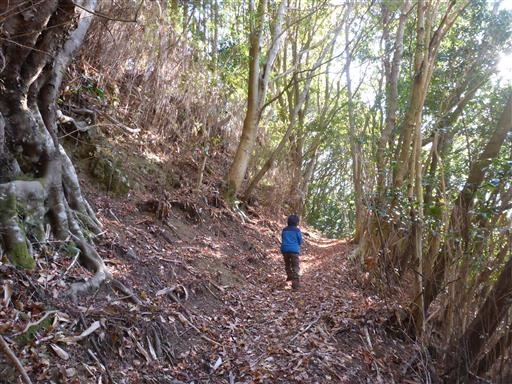
ヒュッテの標識。この先に小屋があるらしい。
こんな場所にヒュッテがあるとは知らなかった。
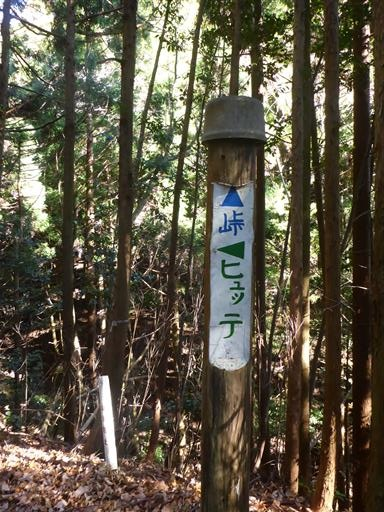
風化した倒木。鳥の形のように見える。手前右が頭、左右が羽だ。
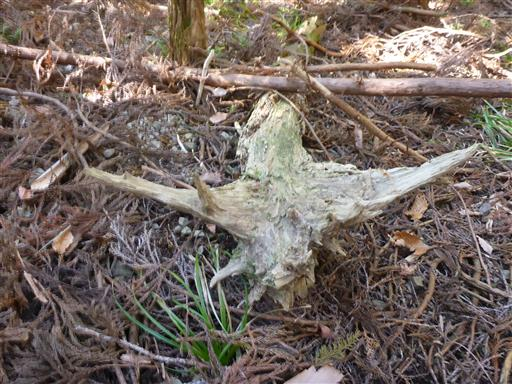
樽峠に到着すると、2体の地蔵が並んでいる。ここは古の峠道だ。
ここまで到達するのに思ったより時間がかかってしまった。
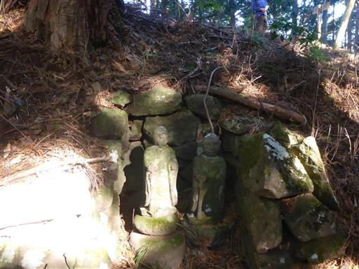
前回ここに来た時は、ここから高ドッキョウに向かった。
今回は反対方向の貫ヶ岳方面に歩を進める。
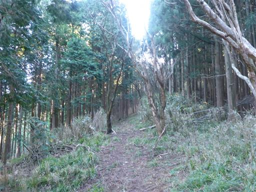
しばらく歩くと貫ヶ岳登山道入口の標識が現れる。
ここまで歩いてようやく入口？
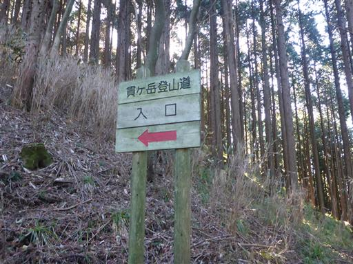
ここからはものすごい急登が始まる。
段差の大きい階段が延々と続いている。
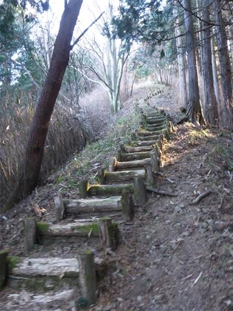
木が真白なキノコに覆いつくされている。
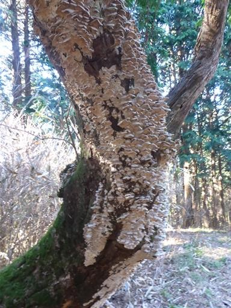
平治の段に到着。
少し登ったところは展望が広がりそうだが、この先に展望台があるので先に進む。
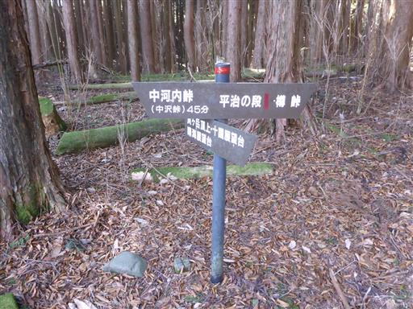
ここからはアップダウンの少ない歩きやすい道になる。
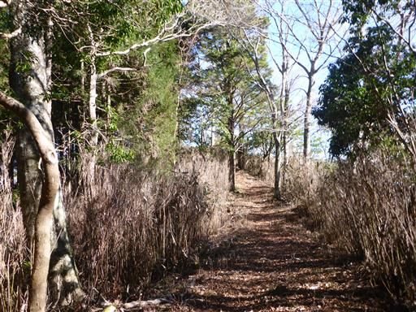
すぐに十国展望台に到着する。
残念ながら富士山に雲がかかり始めている。
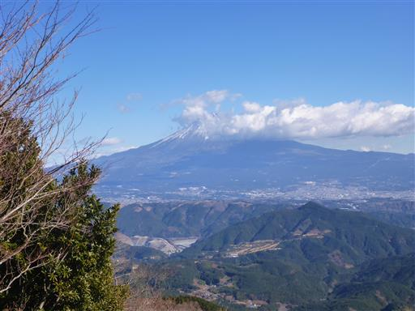
眼下には富士市の街並み、背後に見えているのは愛鷹山だ。
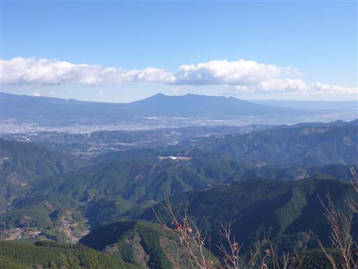
駿河湾の美しい海岸線。
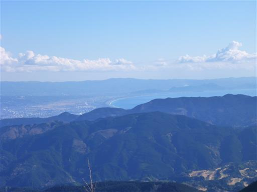
もう少し足を延ばして晴海展望台まで行くことにする。
平坦な道かと思ったら結構下って登り返す必要がある。
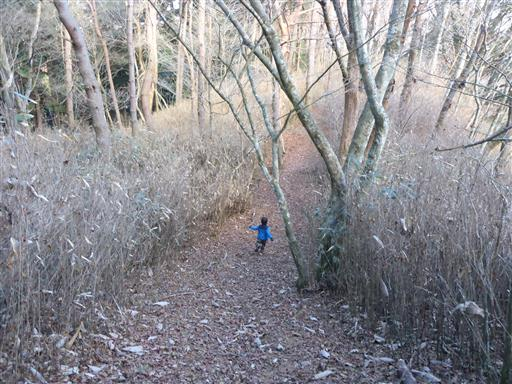
晴海展望台に到着。標高929m。
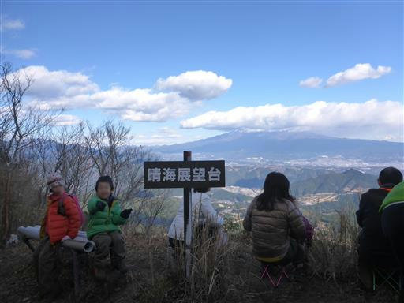
残念ながら富士山は完全に雲に隠れてしまった。
ここから貫ヶ岳までは結構な距離があり、もう12時前のため、
本日の登山はここまでとし、昼食をとることにする。
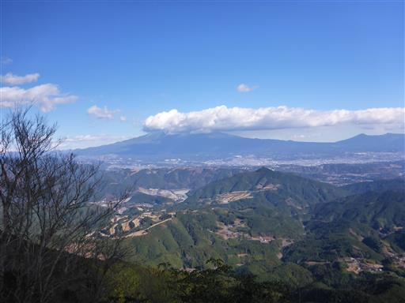
犬を連れて登ってきている人がいて、子供たちが遊んでいる。
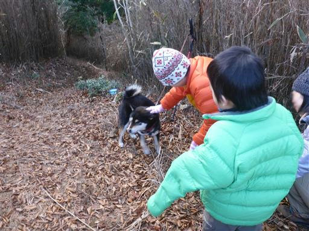
昼食をとったら下山開始。足元には小さな霜柱がある。
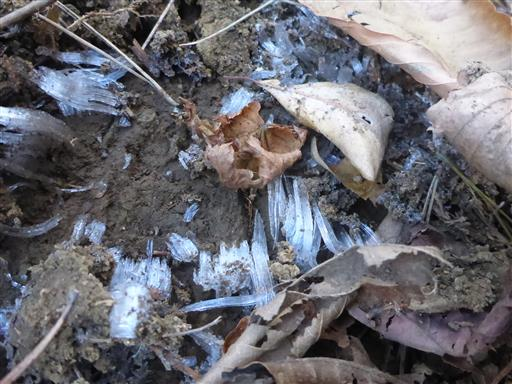
坂を登り返して再び十国展望台に戻ってくる。
相変わらず富士山は雲の中だが、駿河湾と背後の伊豆半島がきれいに見える。
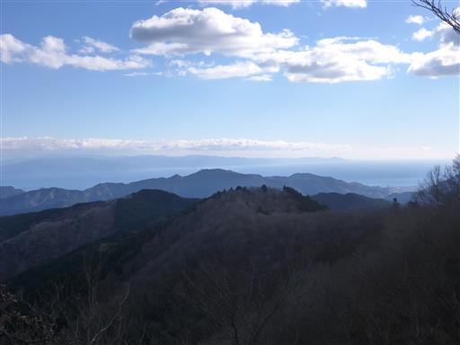
子供たちは急斜面の階段も軽々と下っていく。

樹林の間から格好良い山がチラリと見える。篠井山だろうか？
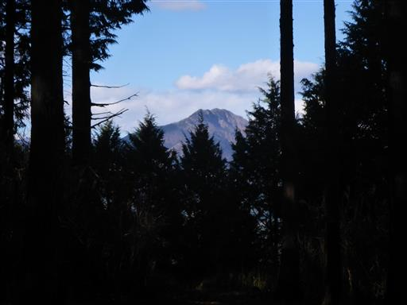
樽峠を経由し、沢沿いの道を下る。
道幅が狭く、左側は急斜面で滑落が怖い登山道だ。
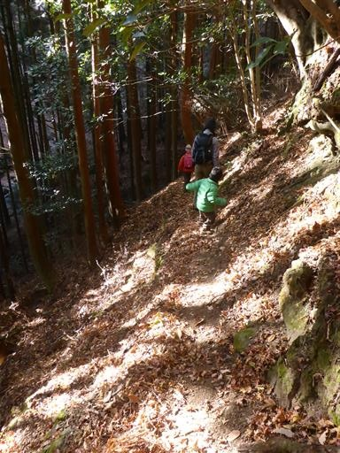
周囲は照葉樹林帯になる。この辺りは比較的温暖な気候なのだろう。
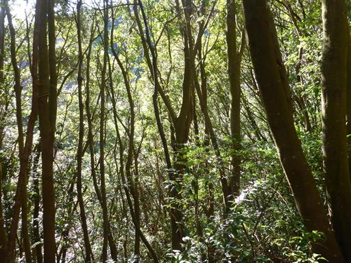
沢に水が流れるようになったところで、少しだけ沢遊び。
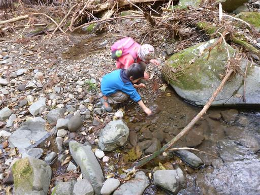
ふと見上げると南国っぽい植物が立っている。ヤシ科の植物だろうか？
周囲にいくらか見られるので、自生しているのだろう。
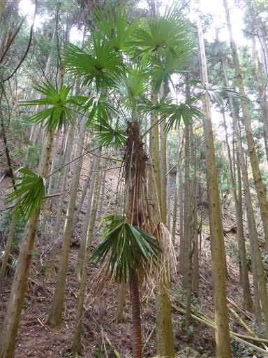
沢の上は倒木だらけ。
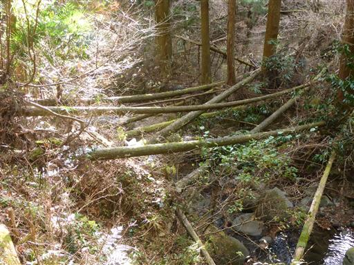
無事お茶畑に戻ってくる。いかにも静岡らしい風景だ。
目的地の貫ヶ岳までは辿り着けず、富士山の展望も得られずで
少々残念な登山になってしまった。
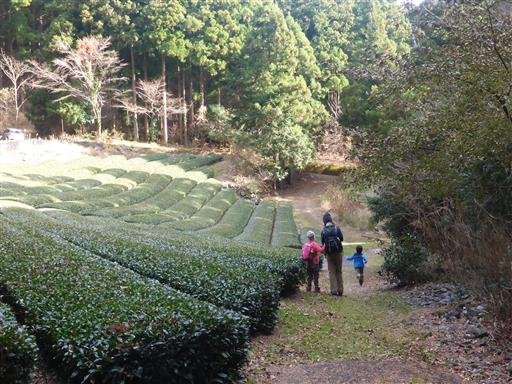